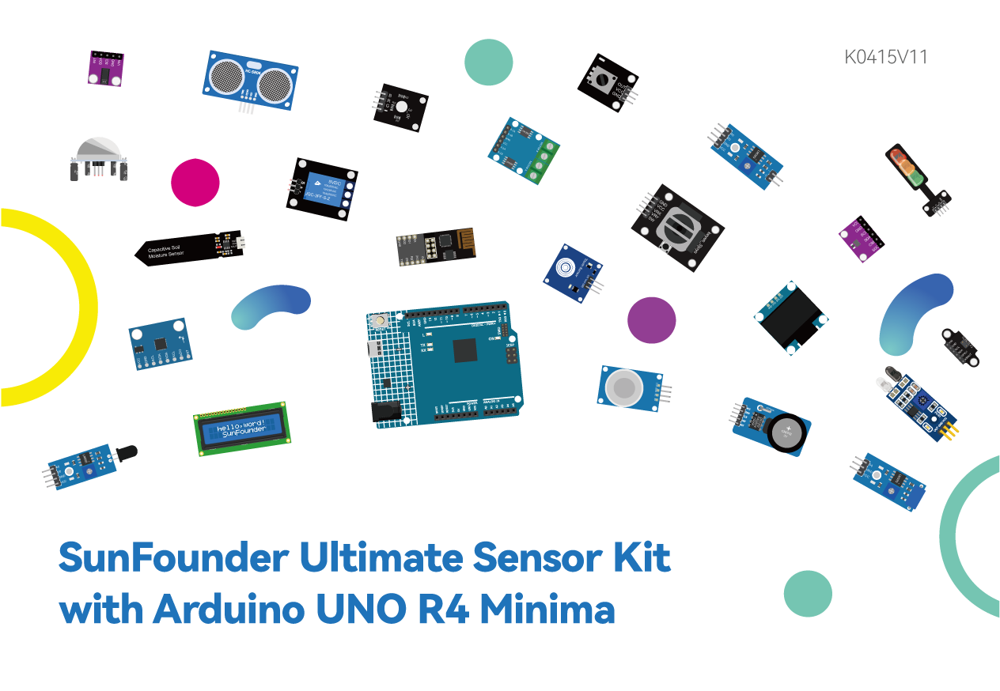

Note
Hello, welcome to the SunFounder Raspberry Pi & Arduino & ESP32 Enthusiasts Community on Facebook! Dive deeper into Raspberry Pi, Arduino, and ESP32 with fellow enthusiasts.
Why Join?
Expert Support: Solve post-sale issues and technical challenges with help from our community and team.
Learn & Share: Exchange tips and tutorials to enhance your skills.
Exclusive Previews: Get early access to new product announcements and sneak peeks.
Special Discounts: Enjoy exclusive discounts on our newest products.
Festive Promotions and Giveaways: Take part in giveaways and holiday promotions.
👉 Ready to explore and create with us? Click [here] and join today!
SunFounder Ultimate Sensor Kit
Thanks for choosing our Ultimate Sensor Kit.
Note
This document is available in the following languages.
Please click on the respective links to access the document in your preferred language.


The Ultimate Sensor Kit is built around the Arduino Uno R4 Minima and comes with more than 30 modules - ultrasonic, flame, accelerometer and gyroscope, pulse oximeter, and many more. Every module is paired with a beginner-friendly example, so you get the parts and the know-how.
Work through the course step by step and you will go from blinking an LED to real projects: IoT projects that report to Blynk over Wi-Fi, Bluetooth projects controlled from your phone, and fun builds such as a smart trash can or an automatic soap dispenser.
If you have any questions or other interesting ideas, feel free to send an email to service@sunfounder.com.
Table of contents
- About Ultimate Sensor Kit
- Get Started with Arduino
- Arduino Video Course
- Video 1 - Arduino Uno R4 Minima
- Video 2 - Introducing the Arduino IDE
- Video 3: Basic Circuits and Breadboarding
- Video 4: Variables, Data Types, and Constants
- Video 5: Digital Inputs and Conditional Logic
- Video 6: Analog to Digital Conversion
- Video 7: Understanding Photoresistors
- Video 8: Controlling RGB Full Color LED through Pulse Width Modulation (PWM)
- Video 9: User-Defined Functions and Serial Input | Potentiometer to Control RGB LED
- Video 10: Arrays and Piezo Buzzers | Playing Musical Tones
- Video 11: Servo Motor | Single-Axis Solar Tracker using Photoresistors
- Video 12: millis Function 丨 Handling Multiple Tasks 丨 Non-Blocking Code
- Video 13: Hardware Interrupts | Debouncing a Button
- Video 14: I2C 16x2 LCD Display 丨 DHT11 - Humidity and Temperature Sensor 丨 Heat Index
- Video 15: SSD1306 OLED Display | Text, Graphics, and Animation
- Download the Code
- Component Basics
- Arduino UNO R4 Minima Board
- Breadboard
- Jumper Wires
- Ultrasonic Sensor Module (HC-SR04)
- Gas/Smoke Sensor Module (MQ2)
- Flame Sensor Module
- Vibration Sensor Module (SW-420)
- Accelerometer & Gyroscope Module (MPU6050)
- Button Module
- Photoresistor Module
- Potentiometer Module
- IR Obstacle Avoidance Sensor Module
- Capacitive Soil Moisture Module
- Raindrop Detection Module
- Temperature and Humidity Sensor Module (DHT11)
- PIR Motion Module (HC-SR501)
- Temperature, Humidity & Pressure Sensor (BMP280)
- Pulse Oximeter and Heart Rate Sensor (MAX30102)
- Real Time Clock Module (DS1302)
- Touch Sensor Module
- Infrared Speed Sensor Module
- Joystick Module
- Time of Flight Micro-LIDAR Distance Sensor (VL53L0X)
- I2C LCD 1602
- OLED Display Module
- Traffic Light Module
- RGB Module
- 5V Relay Module
- Passive Buzzer Module
- Servo Motor (SG90)
- Centrifugal Pump
- TT Motor
- ESP8266 Module
- JDY-31 Bluetooth Module
- ESPC2-01 Module
- IoT Projects
- Fun Projects
- FAQ
- Thank You
Copyright Notice
All contents including but not limited to texts, images, and code in this manual are owned by the SunFounder Company. You should only use it for personal study, investigation, enjoyment, or other non-commercial or nonprofit purposes, under the related regulations and copyrights laws, without infringing the legal rights of the author and relevant right holders. For any individual or organization that uses these for commercial profit without permission, the Company reserves the right to take legal action.